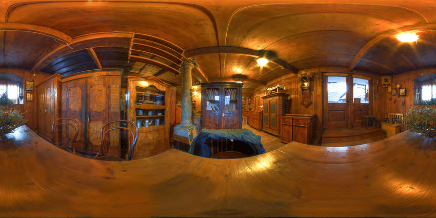
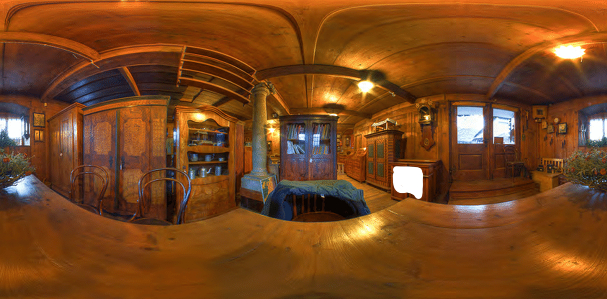

hello world Pannellum Test
The image:

Above image, rendered in panoramic viewer:
The same image, the drawer is made transparent

Above image, rendered in panoramic viewer:
The image, laid on top of a plain red image, then rendered in panoramic viewer: